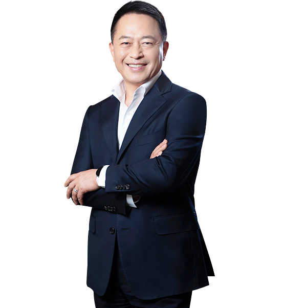

CEO 인사말
진정한 1등 기업, 삼성SDI가 꿈꾸는 미래입니다.
삼성SDI 홈페이지를 방문해 주신 여러분, 반갑습니다.
삼성SDI 대표이사 최윤호입니다.
인사말
삼성SDI는 친환경 에너지와 첨단 소재를 양대 축으로 전기자동차, IT, ESS(Energy Storage System)용 2차전지 사업과 반도체, 디스플레이용 전자재료 사업을 전개하고 있습니다.
삼성SDI의 전 임직원은 초격차 기술 경쟁력과 최고의 품질, 수익성 우위의 질적 성장을 통해 진정한 1등 기업으로 도약하기 위해 쉼 없이 도전하고 있습니다. 또한 삼성SDI는 ESG 경영을 통해 환경과 안전에 대한 사회적 책임을 이행하고, 사회 공헌과 상생 협력을 강화하는 등 이해관계자 가치 제고에 최선을 다하고 있습니다.
친환경 에너지와 첨단 소재 분야에서 진정한 1등 기업이 되기 위한
삼성SDI의 여정에 지속적인 관심과 응원 부탁드립니다.
감사합니다.
삼성SDI 주식회사
대표이사 사장 최윤호
CEO 프로필
- 학력
- 1988 성균관大 경영학 학사
- 주요경력
-
2022.03 - 현재 삼성SDI 대표이사 사장
2021.12 - 2022.03 삼성SDI 사장
2020.01 - 2021.12 삼성전자 경영지원실장 사장
2017.11 - 2020.01 삼성전자 사업지원T/F 담당임원 부사장
-
2014.05 - 2017.11 삼성전자 무선사업부 지원팀장 부사장
2010.12 - 2014.04 삼성미래전략실 전략1팀 담당임원 전무
2010.01 - 2010.12 삼성전자 사업지원팀 담당임원 상무
2007.01 - 2009.12 삼성전자 구주총괄 경영지원팀장 상무